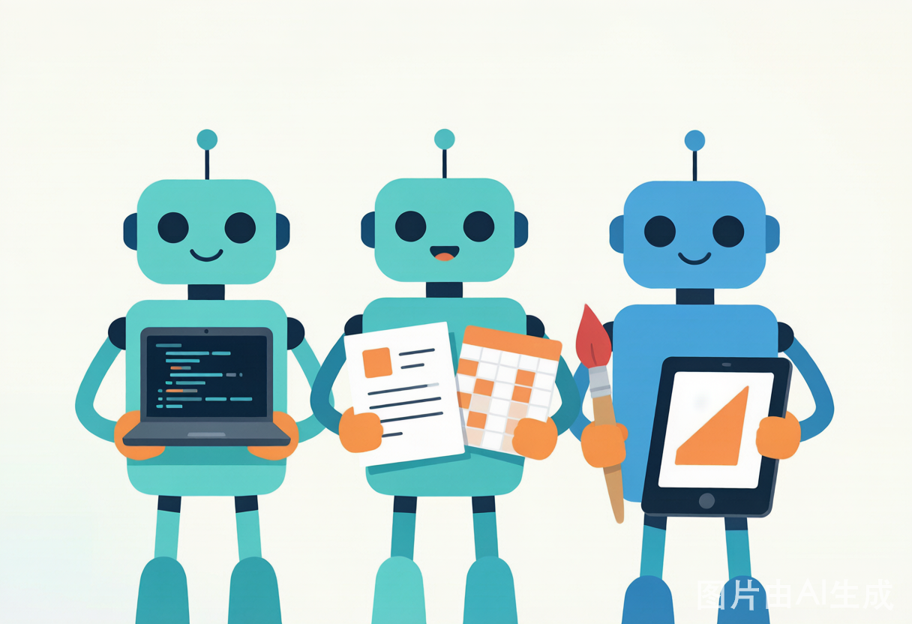
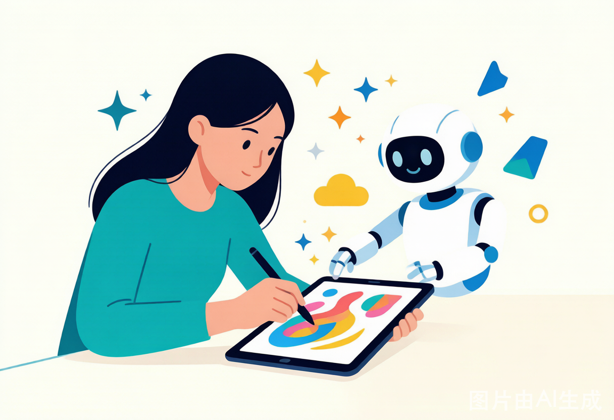

三大选手，闪亮登场
出厂设定，就不太一样
先把三位选手认个脸熟。一句话总结它们的"人设"：
- TRAE Work：程序员的亲儿子，先把写代码这摊事做透，再顺手兼顾点文档、PPT。
- WorkBuddy：给不会写代码的同事准备的"电脑操作小蜜"，一句话就能让它在你电脑上把活办了。
- QoderWork：从设计出发的"创意外挂"，产出物能直接交付，设计师和前端看了都直呼内行。
说白了，一个偏"工程"、一个偏"办公"、一个偏"创意"。接下来挨个拆解。
TRAE Work —— 程序员的"主战场"
代码是它的底座，不是附加功能如果你日常就是跟代码死磕，那 TRAE Work 大概率最对你的胃口。它保留了完整的 IDE 能力：代码库管理、Git 工作流、多文件编辑、终端调试，样样是原生的；文档、数据分析那些，是长在它上面的"第二层"。
咱公司做定制开发的兄弟们最懂——项目经常要在好几个仓库、好几个分支之间来回切，TRAE 这种"工程底座"思路，干起活来更顺手、更少踩坑。
⚠️ 小提醒：它跟腾讯 / 阿里的办公生态不是天然打通的。如果你习惯用企微、腾讯文档，得先算算对接成本；另外它的部分功能跑在云端沙箱里，敏感代码要留个心眼。
WorkBuddy —— 职场人的"操作小蜜"
一句话，让 AI 在本地把事办了咱们公司不只有写代码的，还有行政、HR、财务、市场、售前……这些同学最怕的就是"一堆重复活儿"。WorkBuddy 就是给这群人设计的：一句话生成 PPT、自动填表、批量处理文件、写调研报告，全在本地把事办了。
它重本地授权、能接企微 / QQ / 飞书 / 钉钉远程遥控，对"数据不想全上云"的诉求很友好——这点对咱做客户项目的团队尤其重要。
⚠️ 小提醒：它的编程能力"够用"，但不是主业。要是你是研发团队、需要深度代码协作，它不如 TRAE 顺手。
QoderWork —— 创意党的"设计外挂"
从设计出发，产出物直接能交付
做设计、做内容、做市场的同学看过来。QoderWork 从"设计"出发，语音描述、结构化追问、设计计划、参数微调，整个流程就是围着创意生产转的。它产出的不是草稿，是能直接塞进工作流的成品：HTML、PPT、PDF、高保真原型。
咱公司给客户做定制方案时，常要快速出原型、出视觉稿。QoderWork 这种"设计优先"的思路，前端和设计师能无缝接力，改起来也快。
⚠️ 小提醒：它强调人机协作，讲究一步步把想法结构化。如果你想"一句话全自动跑完复杂任务"，它的流程会比前两款重一点。
选型三问：你是哪种人？
一张图，对号入座说了这么多，到底怎么选？送大家一句口诀 👇
再补一刀：要是你已经在用某家生态（比如腾讯文档 + 企微，或钉钉 + 阿里云），顺着生态走，落地摩擦最小。一个新工具能不能用起来，往往就看它能不能接进你现在的文件、群聊和审批流。
落到咱公司：怎么用才香？
定制开发，正好三款都能搭上作为一家互联网软件定制开发公司，咱们的日常就是"需求千变万化、交付又快又稳"。这三款工具，其实能在不同环节都帮上忙：
- 研发同学用 TRAE Work 管工程、撸代码，多分支切换不头晕；
- 售前 / 市场用 WorkBuddy 秒出方案、自动整理客户资料，省下跑腿时间；
- 设计 / UI用 QoderWork 快速出高保真原型，给客户过目更高效。
工具没有"最好"，只有"最合适"。建议大家先在自己岗位上试一周，看看哪款真帮你省了时间，再在团队里推广，别一上来就全员铺开。
本期互动：来唠两句
互相种草，也互相避坑这三款你用过哪款？最喜欢哪一个？或者你心里还藏着别的"效率神器"？欢迎在评论区 / 群里唠唠——咱们互相种草、也互相避坑 🌱
下期想看什么主题，也欢迎留言点单！说不定下期的封面就是你提的 idea～